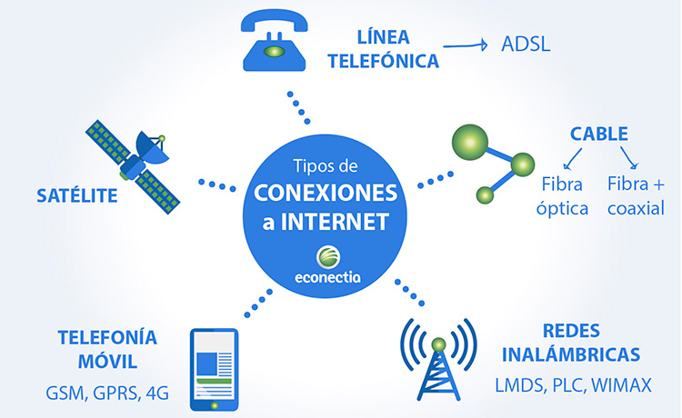

El proveedor de servicios de Internet, (ISP, por la sigla en inglés de Internet service provider) es la empresa que brinda conexión a Internet a sus clientes. Un ISP conecta a sus usuarios a Internet a través de diferentes tecnologías como ADSL, cablemódem, GSM, dial-up, etc
Una ISP (Internet Service Provider, proveedor de servicios de Internet) es una compañía que proporciona privilegios para acceder a Internet.
En esta página speedtest.net podemos ver quién es nuestro proveedor de internet, además de otros datos interesantes
https://www.speedtest.net/results
Pregunta Verdadero-Falso
Hemos leído el artículo anterior, ahora contesta algunas preguntas sobre lo que se planteaba en el artículo
Retroalimentación
Verdadero
Como ponía en el artículo Pueden hacerlo en los siguientes casos
Cuando se trate de servicios «ilegítimos» como el BitTorrent (aunque en realidad no sea ilegal o sinónimo de descarga ilegal, pero por desgracia pasa demasiado a menudo).
Cuando tu contrato establezca un máximo de datos a consumir: para tu operadora, tu conexión a Internet es como comerse una Oreo. Sí, literalmente.
Cuando el gobierno exija a las ISP el bloquear una página o servicio web: pasó con Uber cuando entraron de manera dudosa en el mercado español.
Cuando la conexión esté regulada por algún control parental, como ocurre en Reino Unido por defecto.
Retroalimentación
Verdadero
Las ISP suelen registrar de forma automática los metadatos de nuestras conexiones, como esas direcciones IP o los puertos. Es decir, pueden ver que estás enviando un correo a alguien, pero no pueden ver el contenido. Y también pueden ver todo el tráfico que vaya sin cifrar, es decir, el contenido de las webs que no usen HTTPS en la conexión.
Conexión a Internet
El acceso a Internet o conexión a internet es el sistema de enlace con que el computador, dispositivo móvil o red de computadoras cuenta para conectarse a Internet, lo que les permite visualizar las páginas web desde un navegador y acceder a otros servicios que ofrece Internet, como correo electrónico, mensajería instantánea, protocolo de transferencia de archivos (FTP), etcétera.
Se puede acceder a Internet desde una conexión por línea conmutada, banda ancha fija (a través de cable coaxial, cables de fibra óptica o cobre), vía satélite, banda ancha móvil y teléfonos celulares o móviles con tecnología 2G/3G/4G/5G.

Las empresas que otorgan acceso a Internet reciben el nombre de proveedores de servicios de Internet (Internet Service Provider, ISP).
Veamos el vídeo
Seis formas de conectarse a inernet
En la siguiente tabla podemos ver una comparativa. Las velocidades son relativas pues pueden depender del proveedor del servicio o de otros factores
Servicio
Medios necesarios
Ventajas
Inconvenientes
Velocidad de descarga
satelite
Una antena parabólica
un modem adecuado
Amplia cobertura
Latencia o retardo debido a las grandes distancias cuando se interactúa
Limitación de datos (como en el móvil
Coste de instalación (antena e instalación)
Incidencia de la metereología
20 Mbs/segundo
Conexión ADSL
utiliza la instalación de cable telefónico
router y flltro (para poder utilizar internet y teléfono al mismo tiempor)
Bajo coste de instalación
Servicio estable. Conexión punto a punto p
Depende el servicio de la distancia a la caja de distribución
Puede llegar a los 20 mbs por segundo pero lo normal son 8 0 9 Mbs
Cable coaxial
Utiliza el cableado de televisión por cable
su conexión y servicio son estables y es un poco más rápido que el ADSL
servicio solo disponible en zonas con gran población
35 mbs/s
Fibra óptica
red de fibra óptica
Supera a sus competidores en cuanto calidad, estabilidad del servicio
velocidad
Coste de instalación
Reparación costosa
200 a 300 mbs/s
Conexión por redes móviles
Un móvil con conexión a internet
Gran movilidad,
amplia cobertura
No necesita instalación
Límitación de datos
Falta de cobertura
zonas de cobertura (2G, 3G, 4G)
4G: 100 Mbs por segundo, aungue 30 mbs/s
4G 7.5 mbs/s
3G 3 Mbs por segundo
2G -de un megabit por segundo
wimax o microondas terrestres
router y antena fija receptora
movilidad en zona de cobertura
Menos coste de red que esl adsl o fibra óptica
Interferencia por clima o por otras ondas de radiofrecuencia